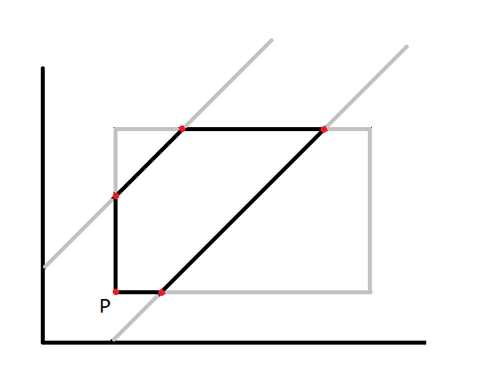

题目大意
给定 A,B 两人到达车站可能的时间区间 [s1,s2] 和 [t1,t2] 。两人中任何一人早到都会等待另一人 w 单位的时间，求出两人相会的概率。
解题报告：
几何概型，设 A 在 x 时刻到达，B 在 y 时刻到达，则 |x-y|<=w 。
但是矩形在直线 y=x+w 和 y=x-w 之间的面积不太容易求得。
[1]讨论求解
没太多好说的，分类罢了，不过分类也要分得巧一些。
我自己想的：可以计算 y=x-w 右边的面积 和 y=x+w 左边的面积 之和，如果>=原面积，就减去一个原面积，即为答案。
不过还有更好的方法，是我从网上看到的：
求出矩形分别在直线 y=x-w, y=x+w 右边的面积 S1, S2，有效面积即为S2-S1。
1 | int s1,s2,t1,t2,w; |
[2]求出两直线之间的点，再求出形成的凸多边形的面积
这个是我在考虑优化方法[1]的中途午睡时突然想到的，还特地起来在纸上试了一下 XD ，虽然比较烦，不过还是挺好玩的 XD

矩形有4个顶点、8个边与直线的交点，而这12个点中，在两直线之间的点组成的多边形即为有效多边形，其面积即为有效面积。
先算出所有的有效点，然后找出最左下角的那个点P。因为是凸多边形，那么其他的点都与P都有所成角且都不同。
将其他的点按照与P所成角排序，然后计算多边形面积即可。
1 | int s1,s2,t1,t2,w; |